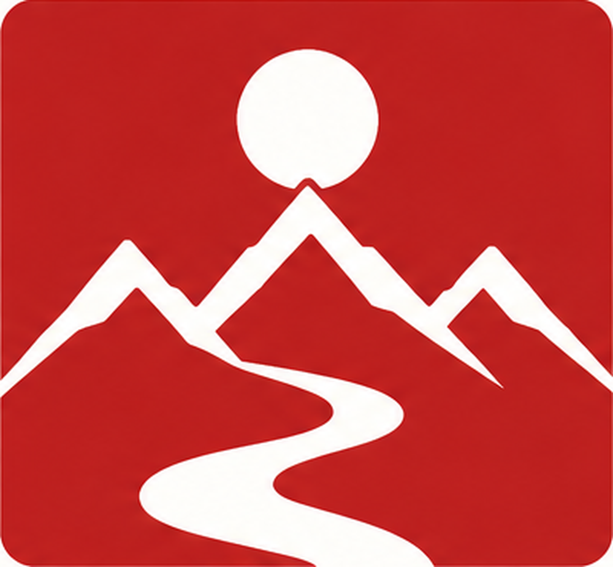
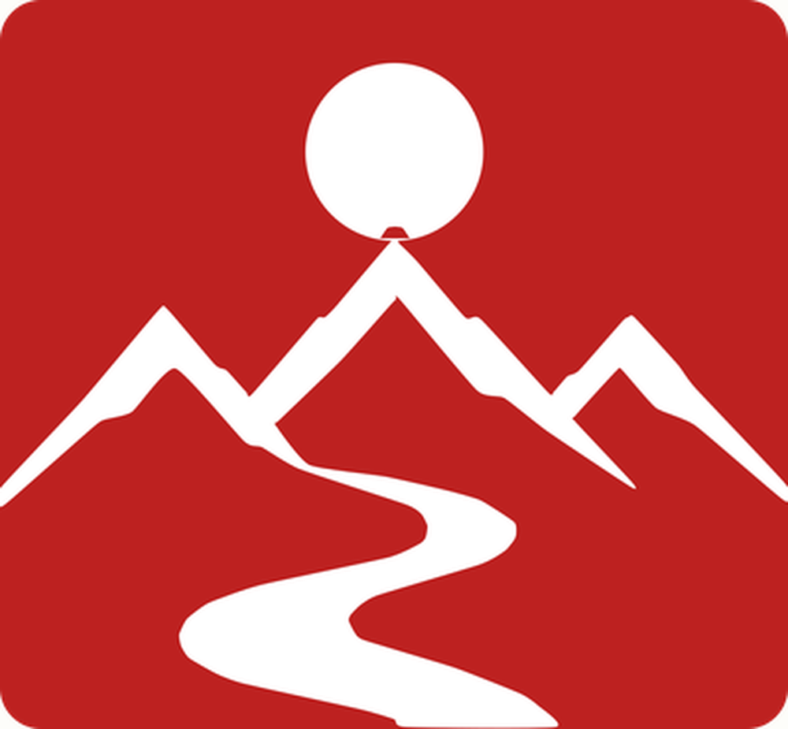
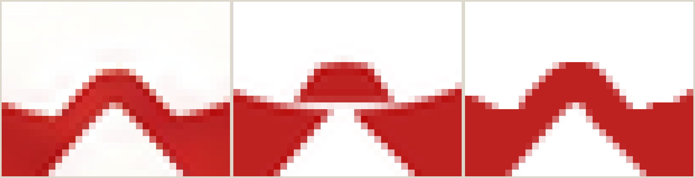
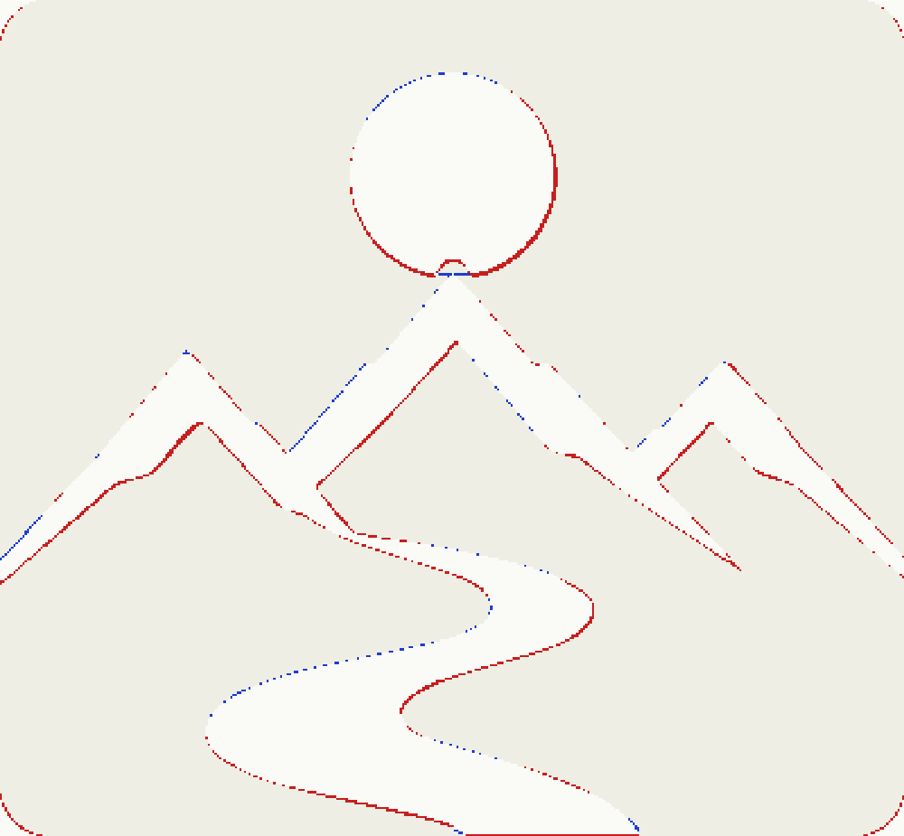
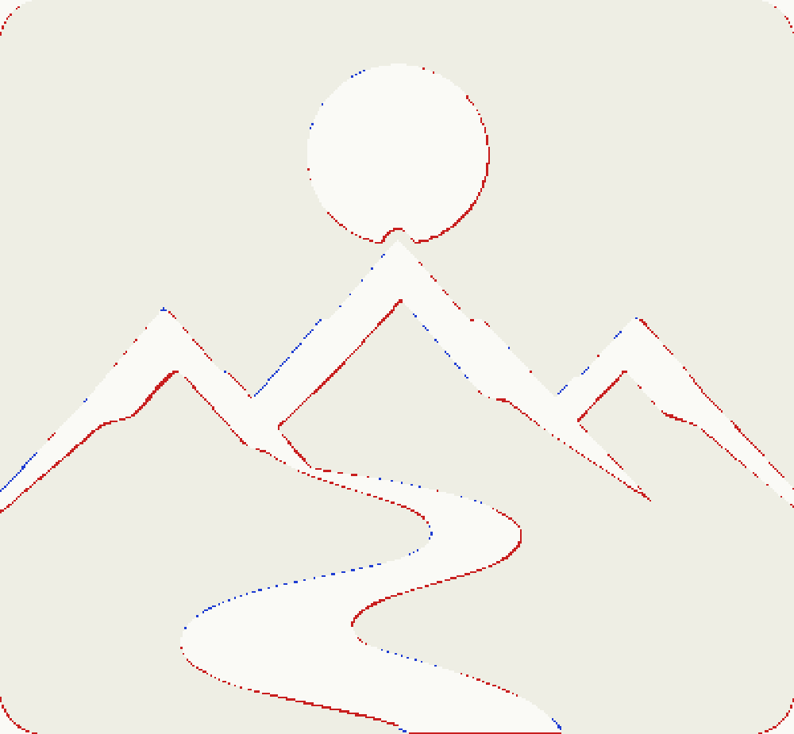
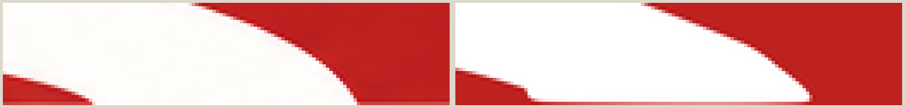
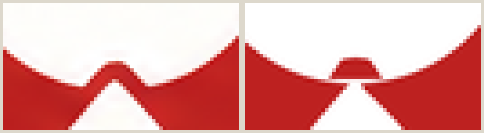
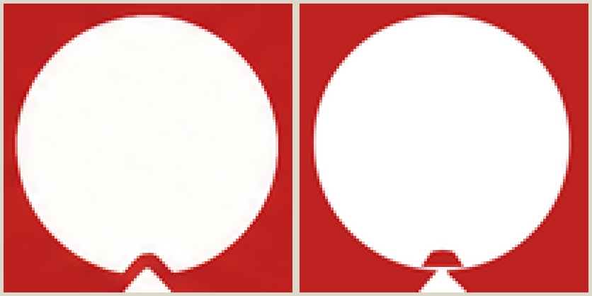

Seçili V-01 sembolü, orijinal rasterdan yeniden çıkarıldı ve mevcut A2 vektör adayıyla piksel piksel karşılaştırıldı. Aşağıdaki her fark yalnızca gerçek piksellerden ölçülmüştür.
Kaynak: explorations/visual-round-7-seal-variants/seal-v-01/image-1790886610188.png (1536×1024) → sembol 400×370 px · Aday: docs/asyada-seal/v01-micro/assets/micro-A2.svg · Siluet IoU 0.9464 · fark eden piksel %1.03





Kırmızı: kaynakta var, adayda yok · mavi: adayda fazla. Siluet IoU: A2 0.9448 → düzeltilmiş 0.9490.
Kaynakta nehir alanın alt kenarından taşar: en alt satırda x=206–282 arasında 77px beyaz var. A2'de en alt satırda beyaz yok — nehir kenarın 1px üstünde bitiyor.
Kaynakta güneş ve sırt ayrı bileşenlerdir (güneş 6521px, sırt+yol 18783px); tepe ucunun çevresinde kırmızı boşluk kalır. A2'de oyuk yumuşatılmış bir kubbeye dönüşüyor ve tepe ucu onu doldurup ikisini tek bileşende (24415px) birleştiriyordu. Düzeltilmiş sürümde bileşen sayısı kaynakla aynı: 2.
Çizgi dik ölçümde medyan: kaynak 17.68px, A2 16.97px — A2 yaklaşık %4 daha ince.
Merkez satır genişliği: kaynak 92px, A2 90px. Fit daire yarıçapı 45.08 → 44.97.



| Özellik | Orijinal | A2 | Durum |
|---|---|---|---|
| Kırmızı alan sınırları | 0,0 – 399,369 | 0,0 – 399,369 | eşit |
| Açıklık (temiz boşluk) | t32 l20 r20 b20 | t32 l20 r20 b20 | eşit |
| Güneş dairesi (cx,cy,r) | 200.24, 77.10, 45.08 | 199.67, 77.39, 44.97 | ≈ |
| Güneş genişliği (merkez satır) | 92 px | 90 px | −2 |
| Girinti ağzı genişliği | 5 px (y=116) | 8 px (y=115) | +3 |
| Tepe konumları (x) | 85 · 286 · 315 | 82 · 284 · 314 | ≈ |
| Sırt çizgi kalınlığı (dik, medyan) | 17.68 px | 16.97 px | −0.71 |
| Nehir maksimum genişliği | 69 px | 68 px | −1 |
| Alt kenardan taşma | x=206–282 (77px) | yok | fark |
| Alan içi bileşen sayısı | 2 (ayrı) | 1 (birleşik) | fark |
Daha önce "iki ayrık beyaz eko / aksan çizgisi" bulunduğu yazılmıştı. Yeniden çıkarma bunu çürütüyor: alan içinde yalnızca iki gerçek beyaz küme var — güneş (6521px) ve sırt+yol (18759px). Ayrık aksan çizgisi yoktur. Kenar köşelerindeki dört küçük leke (≈100px) kırmızı alanın yuvarlatılmış köşelerinden sızan kâğıt zeminidir, logo unsuru değildir. Bu varsayım mühür galerisi sayfalarından kaldırıldı.
A2, çıplak SVG olarak saydam arka planla render edilir; orijinal kırpımda ise yuvarlak köşelerde kâğıt zemin (253,253,250) bulunur. Doğrudan karşılaştırma dört sahte fark üretiyordu (IoU 0.9334). A2 önce ölçülen kâğıt rengine kompozit edildi; adil karşılaştırma IoU 0.9464 verdi.
Hiçbir görüntü modeli kullanılmadı. Her iki logo da gerçek dosyalardan kırpıldı. Görüntü üretimi çağrısı: 0.